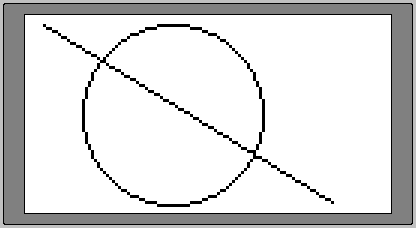
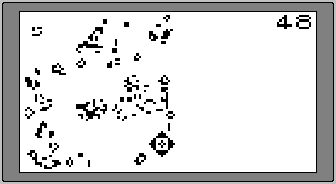

| Index | wersja polska |
The first 512 bytes of the memory module contain a boot loader program which can be loaded and executed by selecting the SMP0 or SMP1 entry from the start menu. The code is loaded into the RAM locations 0x0000-0x01FF, then executed from the address 0x0000. The stack pointer (SP) is initialised to 0x0200. The first instruction (at the location 0x0000) must be a NOP (opcode 0x00A0).
The default loader written by the INIT command simply displays a message "SMP without loader" then locks the system, but the programmer makes possible to put there own machine code programs. Currently it's the only known way to run machine code on BASIC 1.0 systems (BASIC 2.0 provides this feature with the command PATCH).
Source code can be assembled with PDPXASM assembler.
This program can automatically execute any predefined sequence of BASIC instructions at the boot from the memory module.
In particular, it allows to load and run a BASIC program with only two key strokes.
In the example code the command LOAD"SMx:AUTO",R is executed.
Any occurrence of the lower-case character x in the command string is replaced by the loader with 0 or 1, depending on the slot from which it was booted.
Note: In the BASIC 2.0 the option R of the instruction LOAD doesn't seem to work, at least on the emulator.
 version for BASIC 1.0
version for BASIC 1.0
 version for BASIC 2.0
version for BASIC 2.0
This program permanently disables the start menu and immediately skips to the BASIC interpreter after power-on or reset.
It modifies the reset vector stored in the battery backed RAM in the Real Time Clock chip so that it points to the BASIC interpreter "cold start" instead of the usual "welcome screen" routine.
There don't seem to be any other possible entry points in the ROM.
To reverse the changes the batteries have to be removed from the calculator for a while.
Note: Unlike a real MK-90, the emulated one intentionally doesn't preserve the battery backed RAM contents between sessions!
 version for BASIC 1.0
version for BASIC 1.0
 version for BASIC 2.0
version for BASIC 2.0
A set of routines performing basic graphics functions:

This machine code program implements Conway's Game of Life. Because its size exceeds 512 bytes, it has to be stored in the cartridge data area. In order to prevent the system from overwriting it, the value at the location 0x0412 (in the cartridge directory area) is changed from 0x10 to 0x0D. This step allocates three last sectors for machine code programs of size up to 1.5 kBytes, leaving the remaining space of 6.5 kBytes available for the system. The original boot loader is replaced by another one reading the code from the three last sectors to the RAM, then starting it.
Since the program doesn't use any ROM calls, it should work with any BASIC version.
The program can be terminated only by the reset key or power switch.

The program loads to the MK-90 memory and executes machine code compressed with the DEFLATE algorithm.
It allowed for example to store the Boxing game of 12066 bytes size on the SMP-10 cartridge of 10kB capacity.
It's my adaptation of the INFLATE routine written by Piotr Fusik in the 6502 assembly language.
The original 6502 version is distributed with a suitable compression utility.